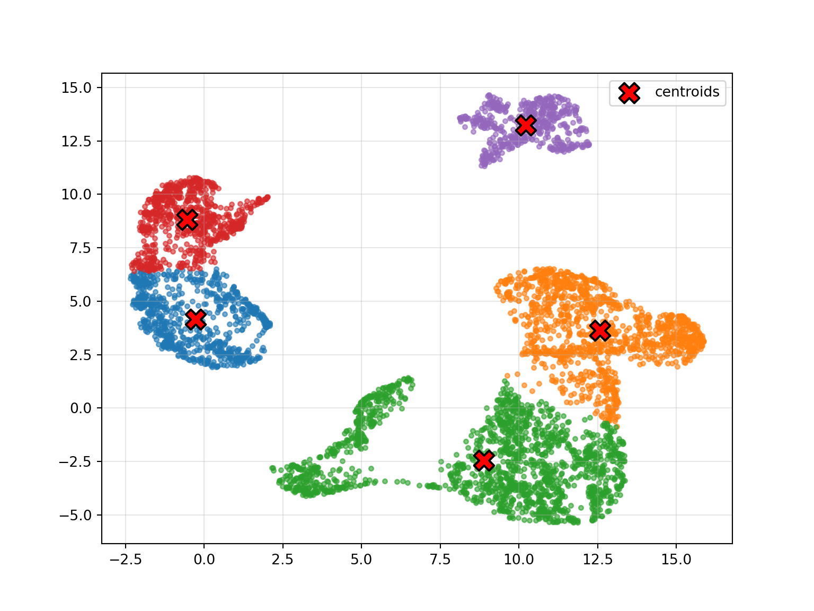

Last updated: 2026-05-22
Checks: 7 0
Knit directory: BIO334_Robinson/
This reproducible R Markdown analysis was created with workflowr (version 1.7.2). The Checks tab describes the reproducibility checks that were applied when the results were created. The Past versions tab lists the development history.
Great! Since the R Markdown file has been committed to the Git repository, you know the exact version of the code that produced these results.
Great job! The global environment was empty. Objects defined in the global environment can affect the analysis in your R Markdown file in unknown ways. For reproduciblity it’s best to always run the code in an empty environment.
The command set.seed(20260522) was run prior to running
the code in the R Markdown file. Setting a seed ensures that any results
that rely on randomness, e.g. subsampling or permutations, are
reproducible.
Great job! Recording the operating system, R version, and package versions is critical for reproducibility.
Nice! There were no cached chunks for this analysis, so you can be confident that you successfully produced the results during this run.
Great job! Using relative paths to the files within your workflowr project makes it easier to run your code on other machines.
Great! You are using Git for version control. Tracking code development and connecting the code version to the results is critical for reproducibility.
The results in this page were generated with repository version 0c324d3. See the Past versions tab to see a history of the changes made to the R Markdown and HTML files.
Note that you need to be careful to ensure that all relevant files for
the analysis have been committed to Git prior to generating the results
(you can use wflow_publish or
wflow_git_commit). workflowr only checks the R Markdown
file, but you know if there are other scripts or data files that it
depends on. Below is the status of the Git repository when the results
were generated:
Ignored files:
Ignored: .DS_Store
Ignored: .Rproj.user/
Unstaged changes:
Modified: .Rprofile
Modified: BIO334_Robinson.Rproj
Note that any generated files, e.g. HTML, png, CSS, etc., are not included in this status report because it is ok for generated content to have uncommitted changes.
These are the previous versions of the repository in which changes were
made to the R Markdown (analysis/von_mering.Rmd) and HTML
(docs/von_mering.html) files. If you’ve configured a remote
Git repository (see ?wflow_git_remote), click on the
hyperlinks in the table below to view the files as they were in that
past version.
| File | Version | Author | Date | Message |
|---|---|---|---|---|
| Rmd | 0c324d3 | jkhazn | 2026-05-22 | Add four professor block analyses |
List comprehensions, DNA string cleaning, and a from-scratch k-means
implementation (Week1/python1practice.py).
sq_interval = [i**2 for i in range(21)]
#print(sq_interval)
import numpy as np
import math
even_sq_interval = [i**2 for i in range(21) if i % 2 == 0]
#print(even_sq_interval)
some_dna = "aACTa TtCcC acCtc\tcaTCC CGGCc\nTaTaT CTGaa"
some_dna_clean = some_dna.replace('\t','').replace('\n','').upper()
some_list = some_dna_clean.split(' ')
#print(some_list)
string = ''
for i in some_list:
string += i + '\n'
#print(string)
def count_nucleotides(filename):
#print(filename)
my_file = open((filename),'r')
text = my_file.readlines()
print(text)
strings = ''
for i in range(len(text)-1):
strings += text[i].strip('\n')
print(strings)
nucleotide_dic = {'A':0,'T':0,'C':0,'G':0}
for i in strings:
nucleotide_dic[i] += 1
print(nucleotide_dic)
for key in nucleotide_dic:
print('Count of '+key+': '+str(nucleotide_dic[key]))
#count_nucleotides('/Users/jameskhaznadar/Desktop/bio334_python/Week1/strange_dna.txt')
data = np.genfromtxt('/Users/jameskhaznadar/Desktop/bio334_python/Week1/data.csv', delimiter=',')
def create_initial_centroids(data, k):
np.random.seed(5)
centroids = np.zeros((k, 2))
centroids[:, 0] = np.random.uniform(np.min(data[:, 0]),np.max(data[:,0]),size=k)
centroids[:, 1] = np.random.uniform(np.min(data[:, 1]),np.max(data[:,1]),size=k)
return centroids
centroids = (create_initial_centroids(data,k=3))
def find_distance(p,c):
return math.sqrt((p[0]-c[0])**2 + (p[1]-c[1])**2)
#for i in centroids:
#print(i[0],i[1])
from collections import defaultdict
import matplotlib.pyplot as plt
def k_means(data, k=3, n=10):
centroids = create_initial_centroids(data, k=k)
#print(centroids)
for iteration in range(n):
centroid_dic = defaultdict(list)
for i in data:
closest = float('inf')
closest_var = centroids[0]
for j in centroids:
d = find_distance(i, j)
if d < closest:
closest = d
closest_var = j
centroid_dic[str(closest_var)].append(i)
new_centroids = []
for key in centroid_dic:
count = 0
x = 0
y = 0
for value in centroid_dic[key]:
x += value[0]
y += value[1]
count += 1
if count > 0:
new_centroid = np.array([x/count, y/count])
new_centroids.append(new_centroid)
centroids = np.array(new_centroids)
return centroids, centroid_dic
centroids, centroid_dic = k_means(data, k=5, n=10)
plt.figure(figsize=(8, 6))
for key in centroid_dic:
cluster_points = np.array(centroid_dic[key])
plt.scatter(cluster_points[:, 0], cluster_points[:, 1], s=10, alpha=0.6)
plt.scatter(centroids[:, 0], centroids[:, 1],
s=200, color='red', marker='X',
edgecolor='black', linewidth=1.5,
label='centroids', zorder=5)
plt.legend()
plt.grid(True, alpha=0.3)
plt.show()
Exercises from May 8 using the MFS domain dataset
(Week1/exercises/CutDomain.py).
import csv
def seq_to_dic(filename):
my_file = open(filename)
dictionary = {}
# CHANGED: removed `for line in my_file:` — it was consuming the first
# header line before .read() ran, which dropped the first protein.
reads = my_file.read()
entries = reads.split('>')
for entry in entries:
if not entry.strip(): # ADDED: skip the empty piece before the first '>'
continue
sequence = entry.split('\n')[1:]
text = ''.join(sequence)
dictionary['>'+(entry.split('\n')[0].split(' ')[0])] = text
return dictionary
mfs_domain_proteins = seq_to_dic('/Users/jameskhaznadar/Desktop/bio334_python/Week1/exercises/mfs_domain_proteins.fa')def get_coords(filename):
lists = []
with open(filename) as fd:
for line in fd:
if line.startswith('#') or not line.strip():
continue # skip header/comment/blank lines
cols = line.split()
significance = cols[11]
if float(significance) < 0.05:
name = cols[0]
env_from = int(cols[19]) # CHANGED: 17 -> 19 (env coord from)
env_to = int(cols[20]) # CHANGED: 18 -> 20 (env coord to)
lists.append(['>'+name, env_from, env_to])
return(lists)
coordinated = (get_coords("/Users/jameskhaznadar/Desktop/bio334_python/Week1/exercises/domains_found.tsv"))
#print(coordinated)
'''for item in coordinated:
name = item[0]
start = item[1]
end = item[2]
sequence = mfs_domain_proteins[name]
print(name + '\n', sequence[start: end]) # CHANGED: start-1 to fix off-by-one (HMMER is 1-indexed inclusive)
'''"for item in coordinated:\n name = item[0]\n start = item[1]\n end = item[2]\n\n sequence = mfs_domain_proteins[name]\n print(name + '\n', sequence[start: end]) # CHANGED: start-1 to fix off-by-one (HMMER is 1-indexed inclusive)\n\n"def find_jacard(seq1,seq2):
seq1 = seq1.strip('')
seq2 = seq2.strip('')
matching = 0
total = len(seq1) + len(seq2)
for i in range(len(seq1)):
if seq1[i] == seq2[i]:
matching += 2
return round(1-(matching/total),2)
sequences = ['GDRVGRKFIIWFSILGTAPFALWLPYAD-ADTTAILVILIGFIISSAFAS',
'GDRVGRKFIIWFSILGAAPFALWLPYAD-AQTTAILIVLIGFIISSAFAS',
'GDKVGRKYIIWFSVLGVAPFTMLLPYAS-LEWTGILIVIIGLILSSAFPS',
'GDRFGRKYVIWFSILGTAPFALMLPYAN-LFWTGVLIVPIGMILASAFSA',
'GDRIGRKYVIWGSILGVAPFTLILPYAS-LYWTGILTVIIGFILASAFSA']
import numpy as np
all = []
for i in sequences:
row = []
for j in sequences:
row.append(find_jacard(i,j))
all.append(row)
matrix = np.array(all)
np.fill_diagonal(matrix, np.inf)
lowest = (np.min(matrix))
itemindex = np.where(matrix == lowest)
print(itemindex)(array([0, 1]), array([1, 0]))
highest_1 = itemindex[1][1]
highest_2 = itemindex[1][0]import numpy as np
all = []
for i in sequences:
row = []
for j in sequences:
row.append(find_jacard(i,j))
all.append(row)
matrix = np.array(all)
# clusters list — each entry is a list of indices into the original sequences
clusters = [[0],[1],[2],[3],[4]]
labels = [['Q'],['A'],['B'],['C'],['D']]
# original distance matrix kept untouched (UPGMA always uses original D)
D = matrix.copy()
while len(clusters) > 1:
# build current matrix from clusters using D
n = len(clusters)
current = np.zeros((n,n))
for i in range(n):
for j in range(n):
if i == j:
continue
total = 0
count = 0
for a in clusters[i]:
for b in clusters[j]:
total += D[a,b]
count += 1
current[i,j] = total/count
# find smallest off-diagonal value
masked = current.copy()
np.fill_diagonal(masked, np.inf)
lowest = np.min(masked)
itemindex = np.where(masked == lowest)
i = itemindex[0][0]
j = itemindex[1][0]
if i > j:
i, j = j, i
#print('Merging', ''.join(labels[i]), 'and', ''.join(labels[j]), 'distance', lowest, 'branch', lowest/2)
# merge i and j
new_cluster = clusters[i] + clusters[j]
new_label = labels[i] + labels[j]
# rebuild clusters/labels without i and j, then add the new one
new_clusters = []
new_labels = []
for k in range(len(clusters)):
if k != i and k != j:
new_clusters.append(clusters[k])
new_labels.append(labels[k])
new_clusters.append(new_cluster)
new_labels.append(new_label)
clusters = new_clusters
labels = new_labels
#print('Final:', ''.join(labels[0]))
print('Final cluster order:', ''.join(labels[0]))Final cluster order: QABCDimport csv
def seq_to_dic(filename):
my_file = open(filename)
dictionary = {}
# CHANGED: removed `for line in my_file:` — it was consuming the first
# header line before .read() ran, which dropped the first protein.
reads = my_file.read()
entries = reads.split('>')
for entry in entries:
if not entry.strip(): # ADDED: skip the empty piece before the first '>'
continue
sequence = entry.split('\n')[0]
text = ''.join(sequence)
name = (sequence.split('OS=')[1].split('OX=')[0])
sequence = entry.split('\n')[1:]
text = ''.join(sequence)
print('>'+ name + '\n' + text)
mfs_domain_proteins = seq_to_dic('/Users/jameskhaznadar/Desktop/bio334_python/Week1/exercises/mfs_domain_proteins.fa')>Fusobacterium necrophorum subsp. funduliforme B35
MLLTQRKFLPLFLTQFLGALNDNLLKMAIITFITYHLQGSLTEKGILISSVNVITILPMFFISATAGQFADKFQRNSLVKIIKGIEILGIFFCIFFFYSGQYSLILLTLFVMSTRSAFFGPLKYSILPQHLKEAELISANAFVDTSTYLAVLFGTILGTYLHSPIFVLGFLFSSAVIGFISSFFIPVSPAPRPKAKLHKNILKDIRISYRKVSELKVIYQTILGISWFWSLAAVVMLLIYPLCESVLGTSRNAVSVFMLIFALGISLGAYLCTKILKGVVHPTYVPLSSLGMAVSMFALYWATNRYVPPFENLHTVPFFTSFVGIRMAIILFLLAFFSGMYLVPLNTFLQTRASKKYLATIIAGNNILNACGMVFLSVFVMLLFHLGVSIPQIFFFLSLVSILVAFYILTMLPDALPRSIAQSLLAIFFKVDVKGLEYFEKAGKRVLLIANHTSLLDGLLVAAFMPERLIFAINTHIAKKWWVKIFRPVVSLHPLDPTNPVALKNIIDELKKNQKCIIFPEGRITVTGSLMKVYEGAGVVANAANANILPVRIDGAQFSKFSYLKTKFKTTYFPKITITVLPPTKIKVEEGVSPSLRRKQIGDQLYTIMTNMMYQSSPIATPLFRALLTARKRHGKGHMIAEDIARRSISYYQLILKSYILGRYFEEKIPEKNVALLLPNSLANVVAYFALQSVGKVPAMVNFTQGEAQILSCLHTSGIQTLITAEKMVTLMELQAVIQKIEEAGIRVFYLEQVQEALSYRQKWIGVYRYYRRYTPKVDSSDIATILFTSGSEGTPKAVALNHENLQANRYQISSVFAFNESDVFFNMLPMFHSFGLEVGTILPILSGIKVFFYPSPVHYKIVPELVYDSNASILCGTDTFFQGYAKQANPYDFYNIKYAIVGAEKLKDTTSQIWMEKFGVRILEGYGITETSPVLAVNTPMYQKKNSVGKLVPGIQYRLEEVEGVAEGGRLFVKGRNIMKGYLKNGELESLPDGWYDTGDIVSIDEDGFVHILGRAKRFAKIGGEMVSLAAVEEVLQKKYPDIKLAVLSVQDPKKGEQLVLFTEAEQMDSKDILEYLKEEQYSELWIPKKILTKQEIPILGTGKTDYVKLREMLDTE
>Shinella sp. DD12
MQQNLMTSRRFAPLFWTQFLSAFNDNFLKNTLVFLILATVAAEEAGSLVTLAGAVFMAPFLLFSALGGELADKFDKAVMAERLKRVELAAAGVAVVGLAFHSITVLMAALFLFGVISALFGPVKYGILPDHLERKELPRANAWIEGATFIAILGGTLVAGLAAADGVNPWLFGPMMLGLALACWLSSRYIPRVGAKAPDLSVDRNVLRSTGRLVNALRGDKRLWRSALMASWFWLVGAIVLSLLPPMVKGSLGGDETAITAYLAVFAVAVGIGSAIAAWMSAGRIVLLPAPIGTLIMAVFGLDLAWSVGHAGVAAPAESLSAFFAGPYTIRIAIDLAGMAIAGAFLVVPTFAALQAWAEEEQRSRVIGAANVLSAGFMTVGGGLVAALQAAGTSTPLLLAGLAIANIVAAWVMLKTLPTNAFRDFVSILFRAFLRLEVDGLDNLKKAGKAPIIALNHVSFLDGALALALTDEEPTFAVDYTIAKAWWVKPFLKMCNFLPLDPSKPMATRTLIKTVNNGEPLVIFPEGRITVTGALMKVYDGAAMVADKTGAMVVPVRIDGLEKSYFSRLSSLHVRRRLFPKVKVTILPPVRLTVPAELKGRKRRMAAGAELYQIMSMLMFSTTDTSTTVLEKVIESAEERGMRRLAVQDPVTGSLTYGKLLTGAAVLGAKFRALYPEDRTLGVLLPNANGSVATLLGVMSAGKVPAMLNFTAGSANILSACKAAEVRRVLTSRAFITQAKLGPVVEELAKTLEIVWLDDLRQTIGFADKLRGLLRKGRPLVKRKADDPAVILFTSGSEGAPKGVVLTHRNILSNAAQAASRIDFHSGDKVFNILPVFHSFGLTAGTILPLVSGVPVYFYPSPLHYRIIPELIYSSNATIIFGTDTFLNGYARTAHPYDFRSIRYCFAGAEPVRATTRALYMEKFGVRILEGYGVTEAAPVIALNTPMFNKAGSVGKIMPGMEYRLDPVPGVDVGGRLFVRGANVMSGYLRAENPGVLEPTPDGWHDTGDIVTVDEDGFITIRGRAKRFAKIGGEMVSLAAVEALASELWSGKLSVVVSLPDAKKGERLVLLTDAPDATRAAFLRFAKEKGAMDMMVPSEVKVGTVPVLGSGKVDFVSAQKLLAEQARAEVAA
>Bradyrhizobium japonicum SEMIA 5079
MIRELMSSRRFAPLFWAQFFSALNDNVLKNALVIILLYSAATGHGDALVTVAGAVFIFPYFILSGLGGQLADKYVKSVVARRLKFVEIFAAGFAAAGFFLHSVPLLFTALALFGTIAALFGPVKYAMLPDQLELGELATGNALVEGATFMAILLGTVAGGQFVAGSAHMGWVASAVVVLALLSWAFASRIPQTTPSAPDLPVNANPWTSTLGLLKTLYADKRLWDGTVIVSWFWLVGAIVLSLLPALVKEAVGGTEGVVTLCLATFAIGIAIGSLFAASLSHVRPNLALVPIGAIIMGFAGLDLAWAIGVTAKGQDIAAVDFATSFAGLRMLIDFVAFAFGGGLFVVPSFAAVQAWSAPSERARIIAAGNVLQAAFMVVGSLFVALLQAGGLHVGWIFFGLGVASFGAVWFVLTKWGKEGVRDFGGLLFRALFRTEIRGLENLPPPGTRMLIAPNHVSLIDGPLLHAVLPIDASFAVDTGISKAWWAKPFLRVVKHYTMDPTKPLAARDLIKLVAAGEPVVIFPEGRITVSGSLMKVYDGTAMIADKADAVVVPVRIEGAQRSHLSYLNSSQIKRSWFPRVTVTILPPVKLPVDPALKGKARRNAAGAALQDVMIDAMVKNAMLDHTLFEALGHAYRDRDTGKVIIEDALGTKLTYRKLILGAQVLSRKLETGTVAGENVGVLLPNSAGVAVVFMALQSIGRVPAMLNFSAGPVNVLAAMKAAQVKTVLTSKAFIEKGKLDKLMAAISAEARVVYLEDVRATIGTADKIKGLLAGTAPRVAREANDPAVVLFTSGSEGTPKGVVLSHRNILANAAQALARVDANANDKVFNVLPVFHSFGLTGGMMMPLLAGIPIYMYPSPLHYRIVPELIYQTGATILFGTDTFLTGYARSAHAYDFRTLRLVIAGAEAVKDRTRQVFMERYGIRILEGYGVTETAPVLAMNTPMANRPGTVGRLSPLMESRLDPVPGIEEGGRLSVRGPNVMLGYLRAENPGVLEPLAEGWHDTGDIVAIDPAGFITIKGRAKRFAKIAGEMVSLSAVESIATALWPQAASVAVSIPDQRKGERIVLLTTEKTAERSAMQGQAKAIGASELTVPAAIMVVDKVPLLGTGKTDYVTATTMAREQASSPEREVA
>Campylobacter jejuni K5
MQKNSFLKIYGLIPFLLVAFINAFVDLGHKIIIQNTIYKVYEGSTQLLLTAIVNALILLPFILMLSPSGFLADKYPKNLIMKLSAAFSVMLTIIICISYYNGAFWTAFTLTFIMGIQAALYSPSKYGFIKELVGKDLLAMGNGAVNAVSIVAILAGMSLFSLSFESLYDINHNSSEEVLKQVAPLGFLLILFSLIELYLAWRLPKLKDEIKELKFDSKRYLSGKLLMSNLKLIFENKVIWLCIVGISIFWAISQLYLVSFPVFSKNELFIENTFFVQVSLGFSGIGVVLGSLIAGRFSKNYIELGLIPFGALGVFLMALIMPYFTSLITYSFIFFIFGFCGALFIIPLNSLIQFHAKENELGKILAGNNFIQNIAMLTFLVLATLFANLEINVIYLFYFITLVAFLGAIYVVFKLPFSLVRMLLSIAFLGRYRLLVEGFKNIPEKGGALLLGNHISFIDWAIVQMAIPRKIYFVMERSIYSKWYIKIFLDKFGVIPVSSAASKASLELIAERIKQGDLVCLFPEGVLSRHGQLNEFKGGFEHVCSNLEEDDGVILPFYIRGLWGSTFSRSDEEFSARNRTLSKRNIAIAFGAPMSLHSKKEEVKAKVFELSFMAWKSQCEAMHTIARAFITSAKRNLSNIAIIDSLAGAISYRKLLSLSFILSTLIKENSKKINSNFERGSYAPKEECVGILLPASFASSLLNLSVLLAQKVVVNLNFTAGEKALQAAVKSAQISQIYTSKKFLEKLESKGVSLNFGEEVNLIYMEDVVEIFKKQKSKILAMMMAVSILPSFILKAIFAPSKNNLAIAAILFSSGSEGTPKGVMLNNRNILSNIAQISDVLCTRNNDVILSSLPPFHAFGLTVTTFLPLLESIKSITFADPTDALGIAKAVAKNNVTIMCGTSTFLGIYARNKKLDAIMFESLRVVVSGAEKLKSEVRSAFEMKFKKSIFEGYGATETTPVASVNLPNRFDADYWIVHRASKEGSVGMPLPGTAVRIVDPNTYETLKTNEDGLILIGGHQVMVGYLNNKEKTDEVIKEIDGIRWYNTGDKGHLDEDGFLYIVDRYSRFAKIGGEMISLGALEEEIAKFIDTNIVKFCTVALEDEKKGEQVALLIECDEEFFEGVCEAIKSSSMPAIFKPSRYLKVEKIPLLGSGKVDLKGAKELAKSLV
>Halomonas campaniensis
MQPLLRITGVWPYLIAIFLNAFVDLGHKIVIQNTIFKSYDGETQVVLTALVNGLILLPFILLFSPAGHVADSYPKVRILRGSAWAAVAVSLGITAAYYQGWFWLAFAMTLVLAIQSAFYSPAKYGLVKGLFGKPRLAEANGLIQAVTIGAILAGTVAFTALFESWILPSAQTPGELLRSIAPLGWLLVLNSVIQVMALYRLKPDNAQPSTTPLTWQRYIKGSALKDNLSILGRQPVLRLSIIGLATFWSVGQVLLAAFPAYAKDALSIDNTLVLQGILAASGIGIALGSLLASKLSRNRIETGLIPLGAVGVAVGLWCLPLLTTPISQALNFVFIGMMGGLFIVPLNALIQFHAADHELGTVLAANNWIQNLSMLGFLALTALFALAGVDSHYLLLLVATVAMVGGGYTIFKLPQSLVRFLLSFLLTRRYRVDVHGLEHLPAQGGVLLLGNHISWVDWAMVQIACPRPVRFVMLKDIYQRWYLRWFFKALGCIPIERGAGADNALAAVAEQLNNGEVVCLFPEGAISRNGQLGELRRGYERACKLANPEVRIVPFYLRGLWGSQFSRSSSKLKELRNAPLHRSVVVAFGKPLPKDTPADVLKRRIFEQATNSWQHAIDELPSLPDAWIRSVKRNLGAQALTDTLSHPLTAGQALTASLLIAKRIHTLTPGQNVGLLLPNSSVGALANMATLLAGKTLVNLNYHFDDSPSGTAKEDTFSAALAQANIDTVFTSRHFVEKLQQQGLNISQRLANIKTIYLEDLQASIRRHERVSTWLAVRLLPTWLLQRLYCRSRDANATAAIVFPSTSEGQPKGVMLSHRNLMANIKQTSDVLNTQYDDVVIGSLPLFHAFGLTVTQLLPLIEGLPLVCHADPNDTAGIASSVAKHKATLMFGTSDFLQHLNHSPKVHPLMLESLRAVVVSAETLDEQVCSDFVLKFHKPIYKGYGATETAPVASVNLPDSLGAHYQTIQQGSKAGTVGMPLPGTSFKIVEPESFAEQPSGEAGMILISGPQVMQGYLNDSKRTAAAIKELDGQRWFITDDKGFIDEDGFLTLIGRHA
>Azospirillum brasilense
MGELGLLATRRFLPLFVTQFLGAFGDNVLRGAIAVLAVYGMAGTAGDGALISTLAAAAFTVPFLLFSATAGQLADRFDRTLIARAVKVAEIGLMTIAAWGILRADLGVLVVALVGMGAHSTVFGPVKYGLLPDLLKPEELTAGNGLVEAGTFVAILLGTIAGGSLALAHPLALPGLLGATALGGLAASLLIPRAGNADRTVRVGLNPVSVTLRVLRATAQDRVSMLAIYGISVFWGVGAVVMAQFPAIARETLGTDSEGATLLLAVFAVGVAVGSVYAGLGHRVPSRADARRAALAGLVAAVAGAALPFLTPDAPSAEPLSALALLAQPWAMPLLADLFLIAAAGGAFAVPLYALIQHRAAASARARVIAAANVVNALFMVVGSGIAAAMLALGVTPLTVAAWGGASMLAAVVLALAIDAVGLGRALARAFFRLAFRVELRGAEHLERLEGAAVVTPNHQSFLDGALLAAFLPGMRFAVDSFIAQQAWAKPFLALADHVTIDPTKPMGTRLLARSLAEGHKICIFPEGRITVTGSLMKINGGPGMLADKAGCPIVPVCIEGAQRSILSRMHGRLRLGLFPRITITVMPPVATPDVTGLAGKKRRAALKSWLSRVMTETVFAAGQRRDTLALALLEAGRKTGWGKAAVQDGDFTTLSYRALTARSLVLGRILARGTEPGEAVGVLLPTASPTAAVFFGLAAYGRPAAMLNFTAGAEAIKAACRAAGLRRIVTSARFVEMGRLGPLVEALAAEHSIVYLEDVKRGLGIGDKLRALAASVAPERFLPEQGEPDDVAAILFTSGSEGPPKGVALTHDNLLANMAQVASVVDFTRQDVVFNCLPVFHSFGLLGGMLLPILNGVKTVLYPNPRHVRLIPELVYQTNATVLFGTDFFLNAWARAADPYDFRSLRLVFAGAERLQEETRRTYTERLRVHLLEGYGTTETSPVIAVNTPARFRPGTVGQALPGIETELLPVPGVPVGGRLRVRGPNVMKGYMRADNPGVVEPPEDGWHDTGDIVDIDADGFIRIVGRVKRFAKVAGEMVPLGLVEELALQAAPDATHAAVSLPDARRGERIVLVTAGASLTRDALAAAAKAKGAPEIAIPRDVLRVETIPLLGTGKTDYPAVSRLAAEMLASETA
>Rhizobium sp. IE4771
MTSRKFAPLFWTQFLTAFNDNFLKNTLVFLILFKMSASEGAALVTLAGVILIVPFLLLSALGGELADKHDKAKIAELLKRCEIGIAALAVVGLGFSSISVLMLALFGFGVVSALFGPIKYGILPDHLDRRDLPKANAWIEGGTFIAILAGTIIAALAFSSGDNVLLFGSMMMGLSLLCWLASRMIPPTGSKAPDLQIDRNVIRSSYRLVMEIREDKRLWRSALMNCWFWLVGAFVLSILPTMVTELLGGSELVVPAYLTVFAIAVAVGSAIAAWMSSGRIVLLPAPVGTALLGLFSLDLAWNLWGLQSTTHATTILDFFAGQNTIRVAIDLAGMAIAGAFIAVPTFAGLQTWAHEDRRARVIGAANVLSALFITVGLGLVAVIQALGASIPQILIGLGILNFAVAWLMLKTLPTNPFRDFISILFRAFMRLEVEGLENIKKAGRAPIIALNHVSLLDGALALAITEEEPTFAVDYKIAQAWWVRPFLKMCKFLPLDPTKPMATRSLIKVVQDGSPIGIFPEGRLTVTGTLMKVYDGAAMVADKTGSMVVPVKIDGLEKSYLSYLDNGKIRRRLFPKVKVTILEPVKLEVPAELKGRKRRTAAGAALYQVMSNLLFQTADTSSTVLTRVIQAAQEFGMKKLAVEDPVTGSLSYGKLLTGAAVLGAKFRARFPEQNLGVMLPNANGAAATILGVMSAGKVPAMLNFTAGAANILSACKAAEVKHVLTSRAFVAQAKLGPVVEELQKQVTIVWLDDLRAEVSALDKIRGLLRKGRPLVKRQPDDPAVILFTSGSESTPKGVVLTHRNILSNAAQAAARIDFHSGDKVFNILPVFHSFGLTAGTVLPLISGVPVYFYPSPLHYRIVPELIYVSNATIIFGTDTFLNGYARTAHPYDFRSIRYIFSGAEPVKASTRNTYMEKFGLRILEGYGVTETAPVISINTPMYNKSGTVGKILPGMEWKLEPVPGIDEGGRLHVRGANVMAGYLRAEKPGVLEPLADGWHDTGDIVTIDEDGFVKIRGRAKRFAKIGGEMISLAAVETLAAELWPGALSVVSSLPDPKKGERLVLLTEAETATRAEFLAFAKSKGAMDMMVPAEVTIGKVPVLGSGKVDFVAARKLAESVAEKGEAA
>Fusobacterium necrophorum BFTR-2
MLLTQRKFLPLFLTQFLGALNDNLLKMAIITFITYHLQKSLTEKGILISSVNVITILPMFFVSATAGQFADKFQRNSLVKIIKGIEIIGIFFCIFFFYSGQYSMILLTLFVMSMRSAFFGPLKYSILPQHLKEAELISANAFIDTSTYLAVLFGTILGTYLHSPIFVLGFLFSSAVIGFISSFFIPVSPAPRPKAKLHKNILKDIRITYRKVSELKVIYQTILGISWFWSLAAVVMLLIYPLCESVLGTSRNAVSVFMLIFALGISLGAYLCTKILKGVVHPTYVPLSSLGMAVSMFALYWATNRYVPPFENLHTVPFFTSFVGIRMAIILFLLAFFSGMYLVPLNTFLQTRASKKYLATIIAGNNILNACGMVFLSVFVMLLFHLGVSIPQIFFFLSLVSILVAFYILTMLPDALPRSIAQSLLAIFFKVDVKGLEYFEKAGKRVLLIANHTSLLDGLLVAAFMPERLIFAINTHIAKKWWVKIFRSVVSLHPLDPTNPVALKNIIDELKKNQKCIIFPEGRITVTGSLMKVYEGAGVVANAANANILPVRIDGAQFSKFSYLKTKFKTTYFPKITITVLPPTKIKVEEGVSPSLRRKQIGDQLYTIMTNMMYQSSPIATPLFRALLTARKRHGKGHMIAEDIARRSISYYQLILKSYILGRYFEEKIPEKNVALLLPNSLANVVAYFALQSVGKVPAMVNFTQGEAQILSCLHTSGIQTLITAEKMVTLMELQAVIQKIEEAGIRVFYLEQVQEALSYRQKWIGVYRYYRRYTPKVDSSDIATILFTSGSEGTPKAVALNHENLQANRYQISSVFAFNESDVFFNMLPMFHSFGLEVGTILPILSGIKVFFYPSPVHYKIVPELVYDSNASILCGTDTFFQGYAKQANPYDFYNIKYAIVGAEKLKDSTSQIWMEKFGVRILEGYGITETSPVLAVNTPMYQKKNSVGKLVPGIQYRLEEVEGVAEGGRLFVKGRNIMKGYLKNGELESLPDGWYDTGDIVSIDEDGFVHILGRAKRFAKIGGEMVSLAAVEEVLQKKYPDIKLAVLSVQDPKKGEQLVLFTEAEQMDSKDILEYLKEEQYSELWIPKKILTKQEIPILGTGKTDYVKLREMLDTE
>Rhizobium leguminosarum bv. phaseoli CCGM1
MTSRKFAPLFWTQFLTAFNDNFLKNTLVFLILFKMSASEGAALVTLAGVILIVPFLLLSALGGELADKHDKAKVAELLKRCEIAIAALAVVGLGFSSISVLMAALFGFGVVSALFGPIKYGILPDHLDRRDLPKANAWIEGGTFIAILAGTIIAALAFSSGDNVLLFGSMMMGLSLLCWLASRMIPPTGSKAPDLEIDRNVIRSSYTLVMEIRADKRLWRSALMNCWFWLVGAFVLSILPTMVTELLGGSELVVPAYLTVFAIAVAVGSGIAAWMSSGRIVLLPAPVGTALLGLFSLDLAWNLWGLQSTTHATTILDFFAGQNTIRVAIDLAGMAIAGAFIAVPTFAALQTWAHEDRRARVIGAANVLSALFITVGLGLVAVIQALGASIPEILIGLGILNFAVAWLMLKTLPTNPFRDFISILFRAFMRLEVEGLENIKKAGRAPIIALNHVSLLDGALALAITEEEPTFAVDYKIAQAWWVRPFLKMCKFLPLDPTKPMATRSLIKVVQDGSPIGIFPEGRLTVTGTLMKVYDGAAMVADKTGSMVVPVKIDGLEKSYLSYLGDGKIRRRLFPKVKVTILEPVKLEVPAELKGRKRRTAAGAALYQVMSNLLFETADTSSTVLGRVIQAAQEFGMKKLAVEDPVTGSLTYGKLLTGAAVLGAKFRARFPEANIGVMLPNANGAAATILGVMSAGKVPAMLNFTAGAANILSACKAAEVKHVLTSRAFVAQAKLGPVVEELQKQVTIVWLNDLRAEVGLVDKLRGLLRKGRPLVKRRPDDPAVILFTSGSEGTPKGVVLTHRNILSNAAQAAARIDFHSGDKVFNILPVFHSFGLTAGTVLPLISGVPVYFYPSPLHYRIVPELIYVSNATIIFGTDTFLNGYARTAHPYDFRSIRYIFSGAEPVKASTRNTYMEKFGLRILEGYGVTETAPVISINTPMYNKSGTVGKILPGMEWKLEPVPGIDEGGRLHVRGANVMAGYLRAEKPGVLEPLADGWHDTGDIVTIDEDGFVKIRGRAKRFAKIGGEMISLAAVETLAAELWPGALSVVSSLPDPKKGERLVLLTEAATATRAEFLAFAKSKGAMDMMVPAEVTIGKVPVLGSGKVDFVAARKLAESVAEKGEAA
>endosymbiont of Acanthamoeba sp. UWC8
MALFVLPFCIFSASGGKLADKFRKSRLIVWLKAINIIVALIAVIGFLTGSYFILLFSIFLTGVEAALFGPVKYSILPEGLKKSELILGNGLIEAATFVAILFGVTFGGLFVSHDSFDVYLICFIILAAAVISYVFALFIPNSTVSDPSIKLSVNLFLETKECITFTRKHRRAFLAILGISWFWLIGSVLISQMSNLTKEVFGGDESVFTLLLAAFSFGTGVGSMLCNKLLKEEITTKYVPTSMMVMSFFFLDLWWTSTIFEKKDYLGGIHYFLSNVDGIRAFIDIFMISVSGGIYIVPLYALLQLEIKKEFRSRAIAASNIMSSFFMVVASSITMALIAIGLSEPQLLFILAVANFFTASYICQILPDTVIKNFFQMALKLIYRVEIEGMENYHKAGKRVLIIANHASFIDPILIGALLPDRLIFAIDTYIARKWWLKPFLTFLRAFPVDPSNPMATKTLIDKLKSNTPVVIFPEGRITVTGSLMKIYEGPGMIADKADAVLLPIRLDGPQYSVFSRMHGKLRLRLFPKIRMHILKPQKLSAAHDLMGRDRRHEIGNMLYDIMTEMMFSGTKNTQTLFESFVHAKEQFGGNTTIIQDANKNSLTYNKICAGSFILGKRIAARTNYRDYVGFLLPNAAGTVVAFFATILYGRVPAMLNFSTGLKNLISSCKTAKIKIIYTSRVFIEKASLEHMIEEINQHDIEIVYLEDLRKEIKFYNKFKGILKSLFPLYYYQHYFTKKKYKKLPHANDPAVVLFTSGSEGLPKGVVLSHSNIIANLKQLSSRIDFTSSDKLFSALPIFHSFGLTAGMILPLLYGISTYFYPSPLHYRIIPEMVYGVNATFFFATDTFLAGYAKYAHPYDFFSIRYVFAGAEKLKEETRKIWQEKFGIRVLEGYGATETAPAISVNSPMHYKPGTVGRILPNINYKLEAVEGINEGGKLIVNGPNVMLGYLRPEKPGIIQKPAHVTQDETYEGWYDTGDIVSVDEDKYITILGRAKRFAKIGGEMVSLAAIEEAVTKLWPENLHGTLSVDDPKKGESIILFTDKEGAAKEDIIRFLNKEGYSELYIPKSVIYIEEMPLLGAGKIDYMSLKEKLKNM
>Thioploca ingrica
METEITLWKNRSFIAYLSISFLNAFTDLGHKIIIQNTLFKIYDGTELRIYSAIIQAIMLLPFVMVFTPAGYLADKFPKPWIIQISALIAIPITLLITVSYYLGWFWPAFMLTFLLALQSAFYSPAKYGYIRELVGPQKLAAANSAIQATTIVAILGGTFIYSLLFEGILPAHPQTSSEILQAVRYLGFLLVGGTLLEFSLTFRLPETRPVEATLHFDFKRYLRAEYLRENLYAVWSREGIWLSIIGLSVFYAISQVVLANFGAYLKDVTGGTDTRIANGLMALSGIGFILGSLFAGKVSKNYIETGIIPLGAAGICVTLIILPLLSDYLTLAIVFTTYGFFGGMFVVPLYALIQYLANEDQAGVVMAANNFIQNIFMLIFLGVSILLASLAVSDRVTFYLLAAVTLIGTVYALRKLPQSFVRYLVASLVKQRYRVQVVGMKNLPSTGGVLLLGNHISWLDWAILQIASPRPIRFVIIRTYYEKWYLKWFLDLFQVIPITAGGSKNALEQVKNALQAGEVVALFPEGHISHNGHLSLFKAGFERAVQDTHVFIVPFYLRGLWGSFFSYAAGKYRTGTRSGRLRHITVGFGPPLPATTSAAQVKQAVFETSIHTWQHYLENLEPLALSFLRTAKACGGQTAVLETRACLTYHRLLAGALLFTRHLRTLFSAQQHIGILLPPSAGAVLANLTVLMQGKTVVNLNYTSPLEVISASVQRADIQTILTSRRFLKKLENRKIDLTPLGEQVKLILLEDLGEQISSKERLWAYLQARFLPVWLLRSLYFHKSRLDDTAAILFSSGSEGTPKGVMLSHANLMGNLKQIAAILNPNEEDVILNALPAFHAFGLTVTTFMPLIEGIPMVCQPDPTDAQAVGRLVAQYKVTLLLGTSTFLRIYTKSRKVLPLMFQSLRIIVAGAERLSEEVRKSFKEKFNKDIYEGYGATETSPVASVNILDILLSYSGEVQIGNKPGTVGLPLPGARVKIVDPDTLAELPVGEAGLVLIGGTQIMQRYLKDPEKTAQVIVEQHGVRWYKSGDKGHLDEDGFLTILDRYSRFAKLGGEMVSLGAVETELTKLFDHPELEILAVAIPEQSKGEKIVLLIAGEVDTDSLRTQVLKSGINPLMQPKEYLKVAAIPKLGTGKVDFTAAKRLALK
>Mesorhizobium plurifarium
MEIAMNTHLMMSRRFAPLFWTQFLSAFNDNFLKNTLVFLILFTLAKDQAASLVTLAGAIFMAPFLLLSALGGEIADRFDKALIARRLKFTEIAAAGLSVVGIALSSIPVLMTALLMFGIISALFGPIKYGILPDHLERKELPKANAWIESATFAAILGGTIAGGVVSADGIGVAVFGPIMMALAVGCWLASRYIPATGSAAPNLTIDKNIFRSTWRQVAELRTDMRIWRAGLMTSWFWLVGAIVLSILPAMIKDSLGGNEIAVTAYLAVFAVSIAIGSAIAAWMSQGRMVLLPAPVGTALIALFGLHLAWTIWSMQPSPKAETLAAFFAGPNTIRVAIDLAGMAIAAAFLVVPTFAAVQAWSPEARRARVVAAVSIVNAGFMTVGGALVAAIQAAGVSIAGILFGLVVANAIAAWLMLKFLPTNPFRDFVSILFRAFLRLEVEGLDNLKAAGKAPILALNHVSFLDGPLALTLTDEEPVFAIDYTIAQAWWMKPFMKLARALPLNPAKPMSTRTLIKIVQGGDPLVIFPEGRITVTGGLMKVYDGAAMVADKTGSMVVPVRIEGLEKSYFSRLSSQHVRHRLFPKVKVTILEPVKLEVAQELKGRQRRAAAGSALYQVMSDLVFRTQDIGKTVLEKIIETANERGLKELAVQDPVTGSLSYGKLLTAAAVLGEKFEHLYAGQETLGIMLPNANGSCATLLGVMSAGKVPAMINFTAGAANILSACKAAEVRTVLTSRAFVEQAKLGPVVEEIGRSVDIVWLDDLRATIGLKDKLLGLLRKTTPRVARKADDPAAILFTSGSEGTPKGVVLTHRNILANAAQAASRIDFHSGDKVFNVLPIFHSFGMTAGTVLPLISGVPVYFYPSPLHYRIVPELIYGSNATIIFGTDTFLSGYARTAHPYDFRSVRYCFAGAEPVKAATRTTYMEKFGLRILEGYGVTETAPVIAINTPMYNKSGSVGKIMPGMEYRLEPVPGVDEGGRLFVRGPNVMAGYLRAENPGVIEPLENGWHDTGDVVTVDDAGFISIRGRAKRFAKIGGEMVSLAAVEALAGELWKGSLSAVATMPDARKGEKLILITEASGATRADFLAFAKANGAMELMVPAEVRIVPKVPVLGSGKLDFAGVTRMVRGEEELKVKAA
>Novosphingobium malaysiense
MLAKRRFAPMFTVQFLGAFNDNLLKYAMLLLANYGLFRDAPDKAGMLSVVATGLFTLPYFLFSALAGQVADRIDKATLVRWVKLAEVGIMGIALVGFAWESIPLLLASLFLMGLHSTVFGPVKYSILPQHLHEREIMGGTGLIEAGTFLAILTGQLLAGQVLPWEAGLVAMGLAVLGYVSALAIPSAPPSRGGHPVDWNIARGTWHVLTTAHKGRGVWLAVLGISWFFTAGAVLLTEFVPLVSDTLNAQKDVATLFLVIFSVTIALGSMTVNRLLQGEVSAKYVPISALALALGLIDLSFAAGGFAVTYPNASIAEFAASPGSWRIFADLFVIAFSGGMFIVPLYAILQVRSPAEERSQVIAANNILNAGMTVIAVVIVALLLSAGFSVAQVIGVLGFATLVVAMVSIWLLPETLFKAVIRVVLKVLYRVDVTGIENMPAPGERAVVVVNHLSFLDGVLLGAFLPGKPTFAVHTAIAKSWWIQPFLKLFRAFPVDPTNPMAAKAMVRTVREGNTLVIFPEGRITVTGALMKVFDGPGMVADKADAPIVPVRLNGPQFTPFSRLKGKVRTRVFPKISIDVLPPRRFRIEGEMSARERRAIAGRRLYDEMSAMIFATTDTDRTLFSALCAARAVHGGKAEVVEDIKREPLSLDRLILGSELLGDRLAHRTRPGEAVGLLLPNVNGAALAFFALQAEGRVAAMLNFTAGLTNLLSACETAEIRAVVTAHAFVEQAKLQDTINVLEASGRRVLYLEDLAQEIGTGAKLWHLLLKNGAEGRHLKRKVSPDAPAVILFTSGSEGTPKGVVLTHRNLLANCAQLAARIDFNTSDVVLNALPVFHSFGLTGGTLLPILNGIKTVFYPSPLHYRIVPALAYDANATILFGTDTFLSGYARMAHSYDFYSLRYIFAGAEKVREETRKTYADKFGLRILEGYGATECAPVIAVNTPMHFKAGTVGRLLPAMEARLEPVPGIEEGGRLYVKGPNVMAGYMLASDPGKLQPPAEGWHDTGDIVTIDDAGFVTIRGRAKRFAKIGGEMVSLPAVEGYAAKVWPNADHAVVTRPDAKKGEQLVLYTTTPDADPKALLAWGRANGVTELMLPRDIRVLDALPVLGTGKLDYVTLGEMAKGC
>Rickettsia monacensis
MDTNKLYLFKDRRFLPNFIVQLCGCLNDNILKNALVILITYSITDSLSKYNNLLVLIANATFVLPFIIFASIAGQIADKYERANLIKIIKICEIGIIAFAIYGFHHNNLLILFCSICLMGIHSTFFGPIKYSVLPDHLNKDELLGANGFVEAGTFIGIFIGTIIGSYYTISNNFIIYSLITIAFLGFITSLFSPKSKNANSDIKINFNIIDESINMIKYTKAKKQIYLAILGISWFWFIEAAIISQIPLLAKITFKADENVANLFLAVFSLGVGVGSFLCSKIFEDEITVKYLFISALGISIFGIDLFFASRISSVNYEPTQLKSILVFLSKRHNWRIVIDLFFLAAIGGLYIVPLFAILQHYANPAHRSRIIAVNNLINSIFMVGSTIILSLLFYLNFTIPWIILFISLANIIVTIHIYRLIPEVKIIPFKLLRRIFQICFDLMYKVEVKGFENFQKAGKKVVVVANHISYLDPPLIATYLREEMTFAISPDIQKIWWIKPFLRMARTLPVDPSNPMAIKTLVKEVQKDQKVAIFPEGRISVTGSLMKIYEGPGMIADKAGATVLPVRIDGTQFTHLSKFKNILKRKIFPKITITILPPVKFANMDAASNQERRSYISRTLYDIMADMVFESSDYKNTLFSSLIEAAKIHGFKKKIVDDFEKNAVTYRDLILKSFILGDLIKKNNIFGRNLGLMLPNTTNTLITFYAMQSSGYVPAIINWSSGISTIINSCKLTQIKVVYTSKQFIEKANLHELITNLLDFGIKIIYLEDFKNQIGTALKLKAKIGSYFAQTYYNYFCRNRDDEKPAVIIFTSGTECEPKAVLLSHRNLQTNRYQITAKVPFSPEDIVFNSLPLFHCFGLGGAIITTLNGIKLFLYPSPINYRSIPEVIYDIGATILISTDTFLNGYANYAHPYDFYSLRYIFAGSEKLKESTRQFWLNKYGIRIFEGYGITEAAPIIACNTPMHNKAGTVGRLLPKIDYKLEKVEGINEGGRLFIKGPNIMLGYLDLESNYTYKEWHDTGDIVKIDSEGYITILGRLKRFAKIAGEMISLTKIEEFASEIDPDSLHAAISIPDKTHGEKIILLTTGSDINRENFADAVSKAQISLLHLPKVIITDSEIPLLANGKIDYLEIMKNQQRHHMA
>Legionella massiliensis
MKLTRIKGFLPYMMLVFFNTFIDLGHKILIQDTLYQTLTGSAYTVFSSIINALILLPYILLFTPSGFIADKYPKATVLKITAAAAIPLTVLVTWCYFKGFFWGAFLLTFLLAIQSALNSPAKYGYIKEMFGKENLSQVNAIVQTLAILAILAGTFVFTYIFSYFISASALKNSSDKVLLLKAFAPAGFLLIVFSIFETLMTFRLVKNPAADPQSQYELAQYFKGKYVKSYFNKTRESPVIFACIIGLSVFWAVNQVLLASYGAYLKDHIGHVSVLFAQGSLALGGIGILLGAMYAGKVSKGFVETGLIPVATLGIALGLLLLPCLSNPTAIISLFLVYGFFGGMLIVPLNALIQFNAPRQETGKVQSANSFLQNCFMLGFLGLTVLASLAGMDSRLLLLSLFVIALFGAIYTLIALPQSLTRYLLYFIASRFYRLNVYQLDNLPSSGGVLLLGNHVSFIDWAVLQIACPRPIRFVMERSIYQVWYINWLLKKFNVIPISRGASQDALLEINKSLNEGEVVALFPEGRLTRNGQMGIFRTGFERAAINAKAVIIPFYIHGLWGSKTSRRTAHQKNLRPTNHRQVSVIYGPAMDISSNAQQVKQQVTQLSIKAWKYSIGDLANIQSEWLHQVKKMSDSTAIIAENGKEITMQQLLDRTLGFSRRIKRFVKQQQNIAIVLPTCTEGIIANLATLILGKTIVNLDCTQDTSFFASALKQASIQTIISSHQFKGFLEKQAVPAKIIYIEELTSRKYLSKWVPAWLIKLLFFKKTDVHSTAAIVFSSGSTGERKGVKLSHANLLSNINQVAAVFSLESRDVMLNTLPLSHAFGLTVTTLVPLLKGIPMLCYPQPENTLIIAKLTYKYRVTLLCSTSNLLNLYIQNTEIHPQMLSSLRMVVAGAEKLSTEVYKGFKDKFNLEIYEGYGATEVAPVASCNLPDVISTDDWHIHKAGKAGTVGLPLPGCAFRVVDPQTLKDLTVGEEGLVLIGGTQVMTGYLNQPEKNQDVLIQDNHYIWYKTGDRGLLDREGFLTVVDRYCommand-line script for converting HMMER Stockholm alignment output
to FASTA format (Week1/exercises/stoTransform.py). Run
as:
python stoTransform.py -i <aligned.sto> -o <output.fa>from Bio import AlignIO
import argparse
import io
import re
parser = argparse.ArgumentParser(description='input and output files')
parser.add_argument('-i',action='store',dest='input', help='input file ')
parser.add_argument('-o',action='store',dest='output', help='output file ')
args = parser.parse_args()
with open(args.input, "rb") as raw:
data = raw.read()
# Try common encodings for Windows/hmmalign output
for enc in ("utf-8-sig", "utf-16", "latin-1"):
try:
text = data.decode(enc)
if "# STOCKHOLM" in text[:100]:
break
except UnicodeDecodeError:
continue
else:
raise ValueError("Could not decode input file")
handle = io.StringIO(text)
align = AlignIO.read(handle, "stockholm")
align_dict=dict()
output_str=""
for record in align:
seq=str(record.seq).upper()
seq=seq.replace(".","-")
output_str=output_str+">"+record.id+"\n"+seq+"\n"
with open(args.output, "w") as myfile:
myfile.write(output_str)
sessionInfo()R version 4.4.3 (2025-02-28)
Platform: aarch64-apple-darwin20
Running under: macOS 26.3.1
Matrix products: default
BLAS: /Library/Frameworks/R.framework/Versions/4.4-arm64/Resources/lib/libRblas.0.dylib
LAPACK: /Library/Frameworks/R.framework/Versions/4.4-arm64/Resources/lib/libRlapack.dylib; LAPACK version 3.12.0
locale:
[1] en_US.UTF-8/en_US.UTF-8/en_US.UTF-8/C/en_US.UTF-8/en_US.UTF-8
time zone: Europe/Zurich
tzcode source: internal
attached base packages:
[1] stats graphics grDevices utils datasets methods base
other attached packages:
[1] reticulate_1.45.0 workflowr_1.7.2
loaded via a namespace (and not attached):
[1] Matrix_1.7-2 jsonlite_2.0.0 compiler_4.4.3 promises_1.5.0
[5] Rcpp_1.1.1 stringr_1.5.1 git2r_0.36.2 callr_3.7.6
[9] later_1.4.8 jquerylib_0.1.4 png_0.1-9 yaml_2.3.10
[13] fastmap_1.2.0 lattice_0.22-6 R6_2.6.1 knitr_1.50
[17] tibble_3.2.1 rprojroot_2.1.1 bslib_0.9.0 pillar_1.10.2
[21] rlang_1.1.5 cachem_1.1.0 stringi_1.8.7 httpuv_1.6.17
[25] xfun_0.52 getPass_0.2-4 fs_1.6.5 sass_0.4.9
[29] otel_0.2.0 cli_3.6.4 magrittr_2.0.3 ps_1.9.0
[33] grid_4.4.3 digest_0.6.37 processx_3.8.6 rstudioapi_0.18.0
[37] lifecycle_1.0.4 vctrs_0.6.5 evaluate_1.0.3 glue_1.8.0
[41] whisker_0.4.1 rmarkdown_2.29 httr_1.4.7 tools_4.4.3
[45] pkgconfig_2.0.3 htmltools_0.5.8.1